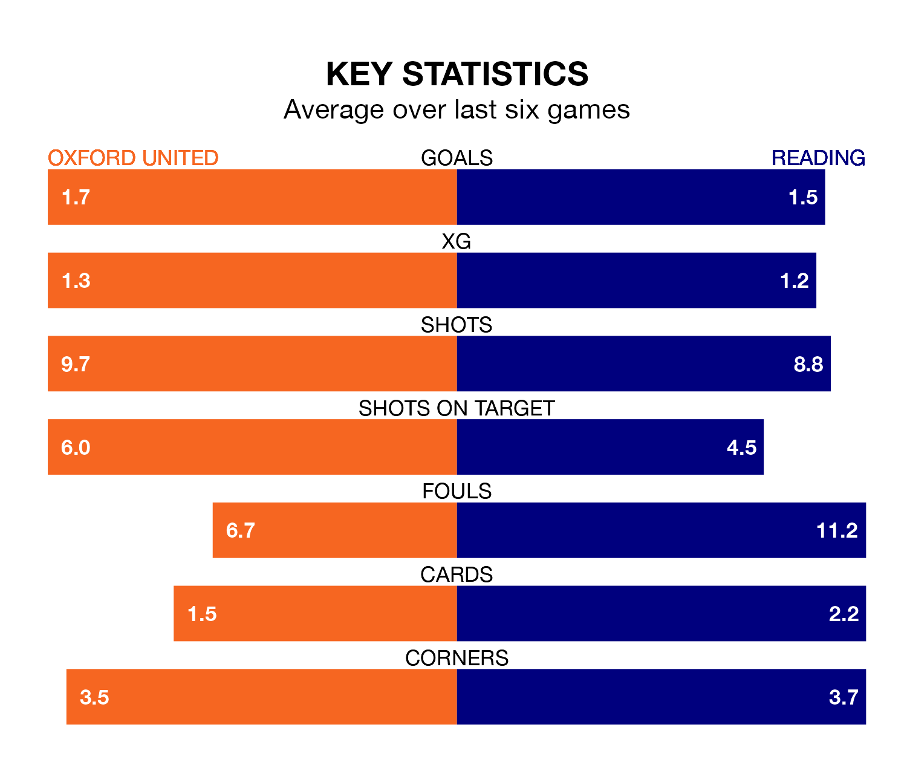

Oxford United are heavy favourites to keep all three points at home in Saturday lunchtime's kick-off against Reading.
The Us, who sit sixth in EFL League One with 29 games played, are priced at 1.5 to seal victory at the Kassam Stadium.
Sitting 14 places and 19 points behind them in the table, Reading are 5.2 to win with *Betting Company*, while the draw is at 3.9.
With 48 goals in 29 games so far this season, Oxford are scoring more than average in the league with 1.7 goals per game. And they are conceding fewer than average, letting in 36 goals at a rate of 1.2 per game.
Reading, meanwhile, are average scorers, with 1.3 goals per game. They have conceded 1.5 goals per game.
United are in mixed form in EFL League One, with two wins and a draw from their last six games.
With two wins and three draws over that period, the Royals's form is slightly better – they have taken nine points from 18, compared to the Us' seven.
Oxford's last match was on Tuesday, a 2-2 draw against Portsmouth, with James Henry and Tyler Goodrham getting the goals for the Us.
Reading drew 1-1 with Leyton Orient last time out, on Saturday, with Harvey Knibbs on the scoresheet.
Saturday's match will be refereed by Scott Oldham, who has taken charge of 10 EFL League One games so far this season, issuing three red cards and booking 22 players. He has awarded one penalty.
The last Reading game Oldham refereed was the 4-0 loss away at Charlton Athletic on October 21. He is yet to oversee a match featuring Oxford this season.
Updated: 14:12 (UTC), 02/02/24